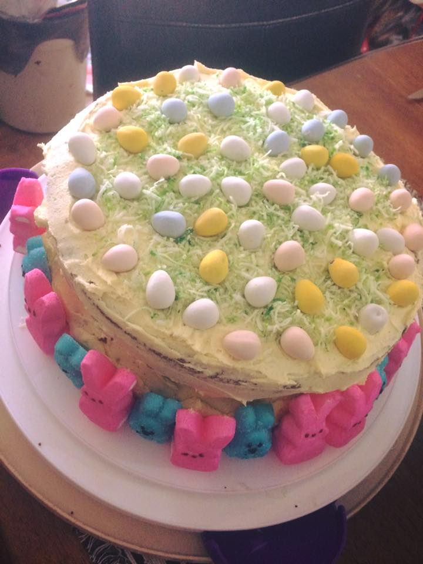
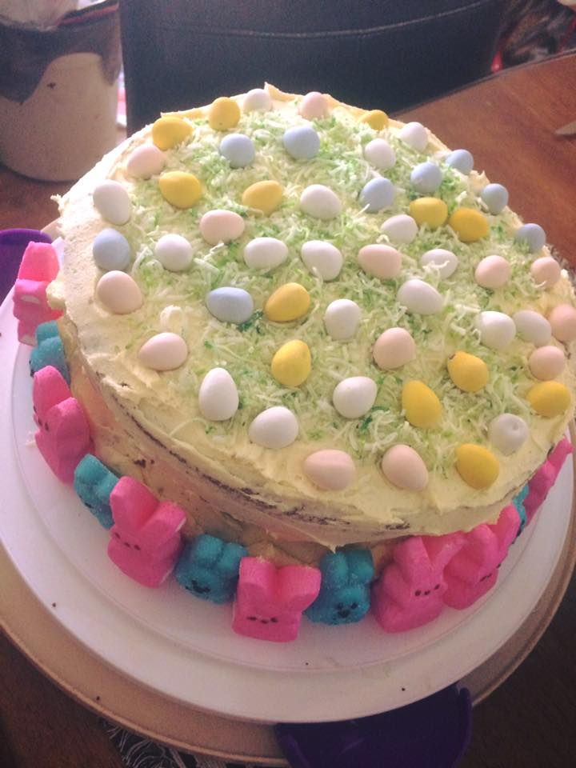

Welcome
This website will be about my baking.
baking is my passion
piece of cake will be the name.
About
my name is Grace
Piece of cake is a home-based bakery in Prince Rupert, BC. Please call or text so we can talk about your next special occasion and how to make it a memorable and custom experience.
Contact me
By phone: 778-361-3369
By email: Graceprbrown@outlook.com
Search on FB: Grace Patricia Brown

The Perfect Buttercream frosting recipe!
Ingredients
- 1 1/2 cups of butter, room tempature.
- 7 cups of powdered sugar
- 1/2 teaspoon salt
- 1/4 – 1/3 cup heavy cream
- 1 teaspoon vanilla extract
- In the bowl of your stand mixer fitted with the paddle attachment, beat the butter on medium speed until smooth. Turn the speed to low and slowly add the powdered sugar until it’s mixed in.
- Slowly stream in 1/4 cup of the heavy cream and vanilla. Turn the mixer up to medium speed and mix for 1 minute until creamy. Add additional heavy cream, if a creamier frosting is desired.
Loved it!
Here are some photos of cakes i've made for birthdays, gender reveals, mothers day, easter,christmas and baby showers.


 
